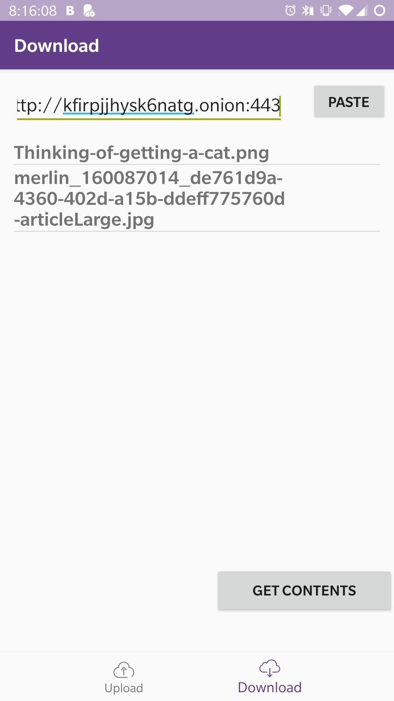

|
Onion Share |
| Link to .apk |
| Link to source zip |
App Description:
Use TOR to share files anonymously with others. Simply download the app and select the files. Your phone itself acts as a server so no unnecessary transmission. These files can then be simply downloaded from the link provided in the upload view in our app. |
Both the people will connect to TOR as soon as they open the app.
 |
The person who is sending files will see a unique link to his application.
 |
The person will then select the files which he wants to share. Shared files will be shown on his screen.
 |
The person who wants to recieve files will put the unique link in the app and select get contents. They can download any files over TOR anonymously.
 |
| Link to YouTube video |
|
Dependencies:
|